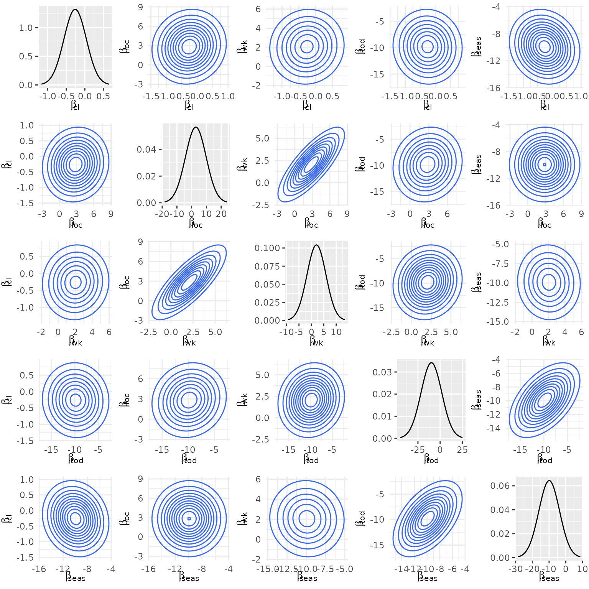
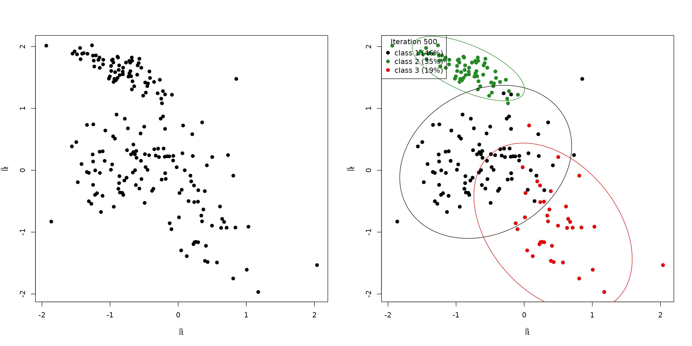

Modeling heterogeneity
Source:vignettes/v04_modeling_heterogeneity.Rmd
v04_modeling_heterogeneity.RmdIn the vignette on the model definition, we pointed out that the probit model can capture choice behavior heterogeneity by imposing a mixing distribution on the coefficient vector. The implementation in {RprobitB} is explained in this vignette1.
Estimating a joint normal mixing distribution
The {mlogit} package (Croissant
2020) contains the data set Electricity, in
which residential electricity customers were asked to decide between
four hypothetical electricity suppliers. The suppliers differed in 6
characteristics:
- their fixed price
pfper kWh, - their contract length
cf, - a boolean
loc, indicating whether the supplier is a local company, - a boolean
wk, indicating whether the supplier is a well known company, - a boolean
tod, indicating whether the supplier offers a time-of-day electricity price (which is higher during the day and lower during the night), and - a boolean
seas, indicating whether the supplier’s price is seasonal dependent.
This constitutes a choice situation where choice behavior
heterogeneity is expected: some customers might prefer a time-of-day
electricity price (because they may be not at home during the day),
while others can have the opposite preference. Ideally these differences
in preferences should be modeled using characteristics of the deciders.
In many cases (as in this data set) we do not have adequate information.
Instead these differences in taste can be captured by means of a mixing
distribution for the tod coefficient. This corresponds to
the assumption of a random coefficient from the underlying mixing
distribution to be drawn for each decider. We can use the estimated
mixing distribution to determine for example the share of deciders that
have a positive versus negative preference towards time-of-day
electricity prices.
Additionally, we expect correlations between the random coefficients
to certain covariates, for example a positive correlation between the
influence of loc and wk: deciders that prefer
local suppliers might also prefer well known companies due to
recommendations and past experiences, although they might be more
expensive than unknown suppliers. The fitted multivariate normal
distribution will reveal these correlations.
The following lines prepare the Electricity data set for
estimation. We use the convenience function as_cov_names()
that relabels the data columns for alternative specific covariates into
the required format
“<covariate>_<alternative>”, compare to the
vignette on choice data. Via the
re = c("cl","loc","wk","tod","seas") argument, we specify
that we want to model random effects for all but the price coefficient,
which we will fix to -1 to interpret the other estimates as
monetary values.
data("Electricity", package = "mlogit")
Electricity <- as_cov_names(Electricity, c("pf","cl","loc","wk","tod","seas"), 1:4)
data <- prepare_data(
form = choice ~ pf + cl + loc + wk + tod + seas | 0,
choice_data = Electricity,
re = c("cl","loc","wk","tod","seas")
)
model_elec <- fit_model(data, R = 1000, scale = "pf := -1")Calling the coef() method on the estimated model also
returns the estimated (marginal) variances of the mixing distribution
besides the average mean effects:
coef(model_elec)
#> Estimate (sd) Variance (sd)
#> 1 pf -1.00 (0.00) NA (NA)
#> 2 cl -0.25 (0.03) 0.30 (0.03)
#> 3 loc 2.75 (0.25) 6.61 (1.33)
#> 4 wk 2.02 (0.22) 3.52 (0.77)
#> 5 tod -9.81 (0.25) 11.74 (2.21)
#> 6 seas -9.87 (0.19) 5.94 (0.99)By the sign of the estimates we can for example deduce, that the
existence of the time-of-day electricity price tod in the
contract has a negative effect. However, the deciders are very
heterogeneous here, because the estimated variance of this coefficient
is large. The same holds for the contract length cl. In
particular, the estimated share of the population that prefers to have a
longer contract length equals:
cl_mu <- coef(model_elec)["cl","mean"]
cl_sd <- sqrt(coef(model_elec)["cl","var"])
pnorm(cl_mu / cl_sd)
#> [1] 0.322294The correlation between the covariates can be accessed as follows:2
cov_mix(model_elec, cor = TRUE)
#> cl loc wk tod seas
#> cl 1.00000000 0.12054515 0.09760942 -0.07360631 -0.12403999
#> loc 0.12054515 1.00000000 0.77769164 0.12450311 0.01283939
#> wk 0.09760942 0.77769164 1.00000000 0.12948417 -0.01680802
#> tod -0.07360631 0.12450311 0.12948417 1.00000000 0.52915014
#> seas -0.12403999 0.01283939 -0.01680802 0.52915014 1.00000000Here, we see the confirmation of our initial assumption about a high
correlation between loc and wk. The pairwise
mixing distributions can be visualized via calling the
plot() method with the additional argument
type = mixture:
plot(model_elec, type = "mixture")
Estimating latent classes
More generally, {RprobitB} allows to specify a Gaussian mixture as the mixing distribution. In particular,
\[ \beta \sim \sum_{c=1}^C \text{MVN} (b_c,\Omega_c).\] This specification allows for a) a better approximation of the true underlying mixing distribution and b) a preference based classification of the deciders.
To estimate a latent mixture, specify a named list
latent_classes with the following arguments and submit it
to the estimation routine fit_model:
C, the fixed number (greater or equal 1) of latent classes, which is set to 1 per default, 3weight_update, a boolean, set toTRUEfor a weight-based update of the latent classes, see below,dp_update, a boolean, set toTRUEfor a Dirichlet process-based update of the latent classes, see below,Cmax, the maximum number of latent classes, set to10per default.
Weight-based update of the latent classes
The following weight-based updating scheme is analogue to Bauer, Büscher, and Batram (2019) and executed within the burn-in period:
We remove class \(c\), if \(s_c<\varepsilon_{\text{min}}\), i.e. if the class weight \(s_c\) drops below some threshold \(\varepsilon_{\text{min}}\). This case indicates that class \(c\) has a negligible impact on the mixing distribution.
We split class \(c\) into two classes \(c_1\) and \(c_2\), if \(s_c>\varepsilon_\text{max}\). This case indicates that class \(c\) has a high influence on the mixing distribution whose approximation can potentially be improved by increasing the resolution in directions of high variance. Therefore, the class means \(b_{c_1}\) and \(b_{c_2}\) of the new classes \(c_1\) and \(c_2\) are shifted in opposite directions from the class mean \(b_c\) of the old class \(c\) in the direction of the highest variance.
We join two classes \(c_1\) and \(c_2\) to one class \(c\), if \(\lVert b_{c_1} - b_{c_2} \rVert<\varepsilon_{\text{distmin}}\), i.e. if the euclidean distance between the class means \(b_{c_1}\) and \(b_{c_2}\) drops below some threshold \(\varepsilon_{\text{distmin}}\). This case indicates location redundancy which should be repealed. The parameters of \(c\) are assigned by adding the values of \(s\) from \(c_1\) and \(c_2\) and averaging the values for \(b\) and \(\Omega\).
These rules contain choices on the values for \(\varepsilon_{\text{min}}\), \(\varepsilon_{\text{max}}\) and \(\varepsilon_{\text{distmin}}\). The adequate value for \(\varepsilon_{\text{distmin}}\) depends on the scale of the parameters. Per default, {RprobitB} sets
epsmin = 0.01,epsmax = 0.99, anddistmin = 0.1.
These values can be adapted through the latent_class
list.
Dirichlet process-based update of the latent classes
As an alternative to the weight-based updating scheme to determine the correct number \(C\) of latent classes, {RprobitB} implemented the Dirichlet process.4 The Dirichlet Process is a Bayesian nonparametric method, where nonparametric means that the number of model parameters can theoretically grow to infinity. The method allows to add more mixture components to the mixing distribution if needed for a better approximation, see Neal (2000) for a documentation of the general case. The literature offers many representations of the method, including the Chinese Restaurant Process (Aldous 1985), the stick-braking methapor (Sethuraman 1994), and the Polya Urn model (Blackwell and MacQueen 1973).
In our case, we face the situation to find a distribution \(g\) that explains the decider-specific coefficients \((\beta_n)_{n = 1,\dots,N}\), where \(g\) is supposed to be a mixture of an unknown number \(C\) of Gaussian densities, i.e. \(g = \sum_{c = 1,\dots,C} s_c \text{MVN}(b_c, \Omega_c)\).
Let \(z_n \in \{1,\dots,C\}\) denote the class membership of \(\beta_n\). A priori, the mixture weights \((s_c)_c\) are given a Dirichlet prior with concentration parameter \(\delta/C\), i.e. \((s_c)_c \mid \delta \sim \text{D}_C(\delta/C,\dots,\delta/C)\). Rasmussen (2000) shows that
\[ \Pr((z_n)_n\mid \delta) = \frac{\Gamma(\delta)}{\Gamma(N+\delta)} \prod_{c=1}^C \frac{\Gamma(m_c + \delta/C)}{\Gamma(\delta/C)}, \] where \(\Gamma(\cdot)\) denotes the gamma function and \(m_c = \#\{n:z_n = c\}\) the number of elements that are currently allocated to class \(c\). Crucially, the last equation is independent of the class weights \((s_c)_c\), yet it still depends on the finite number \(C\) of latent classes. However, Li, Schofield, and Gönen (2019) shows that
\[ \Pr(z_n = c \mid z_{-n}, \delta) = \frac{m_{c,-n} + \delta/C}{N-1+\delta},\] where the notation \(-n\) means excluding the \(n\)th element. We can let \(C\) approach infinity to derive:
\[ \Pr(z_n = c \mid z_{-n}, \delta) \to \frac{m_{c,-n}}{N-1+\delta}. \]
Note that the allocation probabilities do not sum to 1, instead
\[ \sum_{c = 1}^C \frac{m_{c,-n}}{N-1+\delta} = \frac{N-1}{N-1+\delta}. \]
The difference to 1 equals
\[ \Pr(z_n \neq z_m ~ \forall ~ m \neq n \mid z_{-n}, \delta) = \frac{\delta}{N-1+\delta} \]
and constitutes the probability that a new cluster for observation \(n\) is created. Neal (2000) points out that this probability is proportional to the prior parameter \(\delta\): A greater value for \(\delta\) encourages the creation of new clusters, a smaller value for \(\delta\) increases the probability of an allocation to an already existing class.
In summary, the Dirichlet process updates the allocation of each \(\beta\) coefficient vector one at a time, dependent on the other allocations. The number of clusters can theoretically rise to infinity, however, as we delete unoccupied clusters, \(C\) is bounded by \(N\). As a final step after the allocation update, we update the class means \(b_c\) and covariance matrices \(\Omega_c\) by means of their posterior predictive distribution. The mean and covariance matrix for a new generated cluster is drawn from the prior predictive distribution. The corresponding formulas are given in Li, Schofield, and Gönen (2019).
The Dirichlet process directly integrates into our existing Gibbs
sampler. Given \(\beta\) values, it
updated the class means \(b_c\) and
class covariance matrices \(\Omega_c\).
The Dirichlet process updating scheme is implemented in the function
update_classes_dp(). In the following, we give a small
example in the bivariate case P_r = 2. We sample true class
means b_true and class covariance matrices
Omega_true for C_true = 3 true latent classes.
The true (unbalanced) class sizes are given by the vector
N, and z_true denotes the true
allocations.
set.seed(1)
P_r <- 2
C_true <- 3
N <- c(100,70,30)
(b_true <- matrix(replicate(C_true, rnorm(P_r)), nrow = P_r, ncol = C_true))
#> [,1] [,2] [,3]
#> [1,] -0.6264538 -0.8356286 0.3295078
#> [2,] 0.1836433 1.5952808 -0.8204684
(Omega_true <- matrix(replicate(C_true, rwishart(P_r + 1, 0.1*diag(P_r))$W, simplify = TRUE),
nrow = P_r*P_r, ncol = C_true))
#> [,1] [,2] [,3]
#> [1,] 0.3093652 0.14358543 0.2734617
#> [2,] 0.1012729 -0.07444148 -0.1474941
#> [3,] 0.1012729 -0.07444148 -0.1474941
#> [4,] 0.2648235 0.05751780 0.2184029
beta <- c()
for(c in 1:C_true) for(n in 1:N[c])
beta <- cbind(beta, rmvnorm(mu = b_true[,c,drop=F], Sigma = matrix(Omega_true[,c,drop=F], ncol = P_r)))
z_true <- rep(1:3, times = N)We specify the following prior parameters (for their definition see the vignette on model fitting):
Initially, we start with C = 1 latent classes. The class
mean b is set to zero, the covariance matrix
Omega to the identity matrix:
z <- rep(1, ncol(beta))
C <- 1
b <- matrix(0, nrow = P_r, ncol = C)
Omega <- matrix(rep(diag(P_r), C), nrow = P_r*P_r, ncol = C)The following call to update_classes_dp() updates the
latent classes in 100 iterations. Note that we specify the
arguments Cmax and s_desc. The former denotes
the maximum number of latent classes. This specification is not a
requirement for the Dirichlet process per se, but rather for its
implementation. Knowing the maximum possible class number, we can
allocate the required memory space, which leads to a speed improvement.
We later can verify that we won’t exceed the number of
Cmax = 10 latent classes at any point of the Dirichlet
process. Setting s_desc = TRUE ensures that the classes are
ordered by their weights in a descending order to ensure
identifiability.
for(r in 1:100){
dp <- RprobitB:::update_classes_dp(
Cmax = 10, beta, z, b, Omega, delta, xi, D, nu, Theta, s_desc = TRUE
)
z <- dp$z
b <- dp$b
Omega <- dp$Omega
}The Dirichlet process was able to infer the true number
C_true = 3 of latent classes:
par(mfrow = c(1,2))
plot(t(beta), xlab = bquote(beta[1]), ylab = bquote(beta[2]), pch = 19)
RprobitB:::plot_class_allocation(beta, z, b, Omega, r = 100, perc = 0.95)